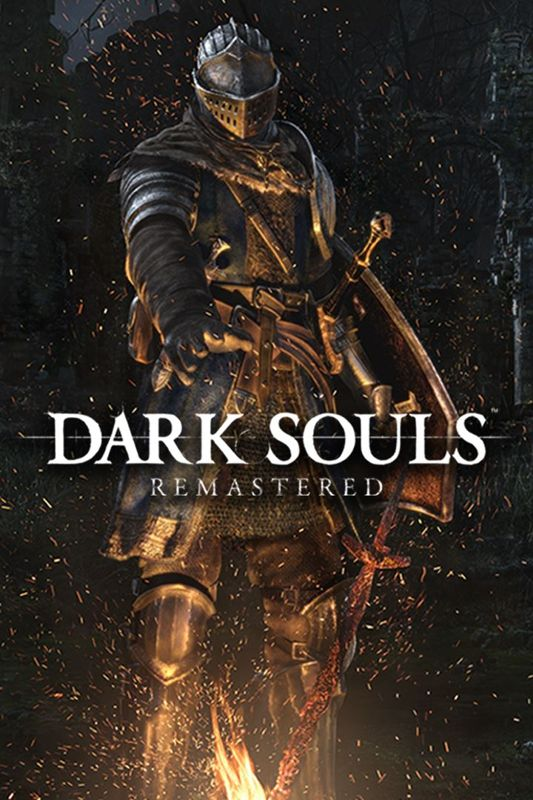

About | I am a huge fan of FromSoftware and their awesome games! I think they are the best, most consistant game studio out there! Learn more about FromSoftware in the "FromSoft" section! |
Some of FromSoftware's Hits
 |
Elden Ring: A huge open world fantasy RPG with huge build variety, stunning visuals, and innovative exploration while improving the core gameplay. | Sekiro: A hardcore action adventure game in a Japanese-fantasy setting. This game focuses on mastering core mechanics and a single build. | |
|  | Dark Souls: The game that put FromSoft on the map, this linear fantasy action RPG with unforgining gameplay sets the bar for the company's games going forward. | Bloodborne: One of the first major deviations from the knight-fantasy setting, explore a grueling victorian-cosmic horror mix with spiced-up gameplay. |
News and Updates
| Sept 11, 2024 | | Elden Ring: Promised Consort Radahn Nerfed! |
| June 21, 2024 | | Elden Ring: Shadow of the Erdree comes out, biggest FromSoftware DLC to date! |
| June 13, 2024 | | Hidetaka Miyazaki, FromSoftware's president, says he is down for a Bloodeborne PC port. It's up to Sony now! |